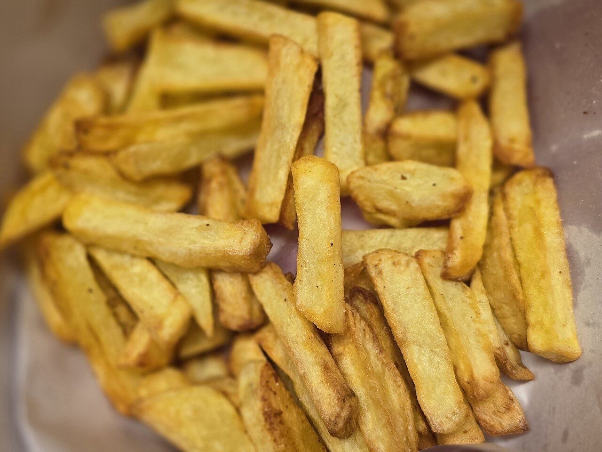

Restaurante · Ponte
Izzo Eat&Drinks
Francesinha Izzo e pizzas em Ponte
O Izzo Eat&Drinks é restaurante e bar na Rua Ave, em Ponte, Guimarães. Peça a francesinha da casa, uma pizza, um hambúrguer ou umas batatas fritas caseiras.
Francesinha da casa
A Francesinha Izzo, para quem gosta de mesa cheia.
Pizzas e hambúrgueres
Com pão de alho e batatas fritas caseiras.
Reserve por WhatsApp
Marque mesa por WhatsApp ou telefone.



Fotografias ilustrativas · no site final usamos as vossas.
Pedido de reserva
Reserve a sua mesa
Escolha o dia e a hora. O pedido chega por WhatsApp e confirmamos logo.
Assim chegaria a mensagem ao vosso WhatsApp. Nesta demonstração nada é enviado.
Visitar
Onde estamos
R. Ave 42, 4805-220 PonteHorário
| Seg, Qua | 12:00–14:30 · 18:30–22:00 |
|---|---|
| Ter | Encerrado |
| Qui | 12:00–15:00 · 18:30–22:00 |
| Sex–Sáb | 12:00–14:30 · 18:30–00:00 |
| Dom | 18:30–22:00 |
Proposta para Izzo Eat&Drinks
Gostou? Isto pode ser o vosso site.
Esta página foi feita de propósito para Izzo Eat&Drinks por João Machado, programador web aqui de Guimarães. Inclui:
- Página rápida no telemóvel, com o vosso nome e identidade
- Ementa e preços fáceis de atualizar
- Botões para ligar, WhatsApp e direções
- Pedidos de reserva ou encomenda direto para o WhatsApp
- Domínio próprio (ex.: izzoeat.pt) ligado ao Google Maps
Eu trato do alojamento e da manutenção. Sem compromisso.